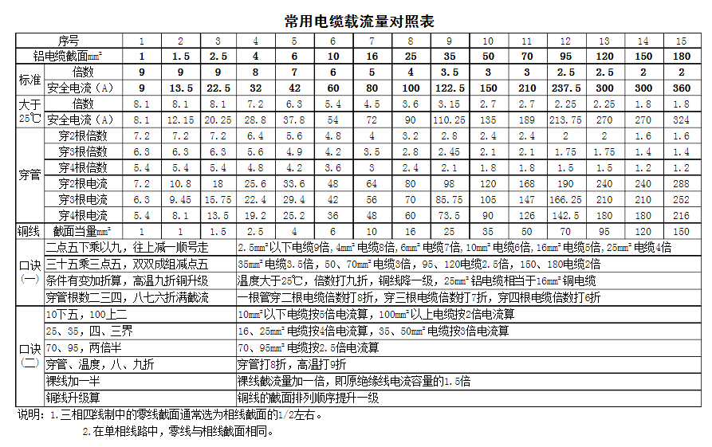

电力相关记录¶
二。 各种家用电器的功率因数
有人测试了各种家用电器的功耗和功率因数，其结果如下：
| 序号 | 名称 | 设备容量（W） | 功率因数 | 无功功率（var） | 视在功率（VA） |
|---|---|---|---|---|---|
| 1 | 照明 | 200 | 0.90 | 96.86 | 222.22 |
| 2 | 空调 | 3000 | 0.80 | 2250.00 | 3750.00 |
| 3 | 电冰箱 | 150 | 0.60 | 200.00 | 250.00 |
| 4 | 微波炉 | 1000 | 0.90 | 484.32 | 1111.11 |
| 5 | 电热水器 | 2000 | 1.00 | 0.00 | 2000.00 |
| 6 | 电饭煲 | 1000 | 1.00 | 0.00 | 1000.00 |
| 7 | 计算机 | 300 | 0.80 | 225.00 | 375.00 |
| 8 | 打印机 | 250 | 0.80 | 187.50 | 312.50 |
| 9 | 电视机 | 200 | 0.80 | 150.00 | 250.00 |
| 10 | 洗衣机 | 200 | 0.60 | 266.67 | 333.33 |
| 11 | 抽油烟机 | 50 |
|
37.50 | 62.50 |
| 12 | 音响 | 300 | 0.60 | 400.00 | 500.00 |
| 13 | 饮水机 | 600 | 1.00 | 0.00 | 600.00 |
| 14 | 卫生设备 | 1000 | 1.00 | 0.00 | 1000.00 |
| 15 | 保健设备 | 600 | 0.80 | 450.00 | 750.00 |
| 16 | 录象机 | 200 | 0.90 | 96.86 | 222.22 |
| 17 | DVDVCD | 100 | 0.90 | 48.43 | 111.11 |
5看
看市场
看友商
看业界
看自己